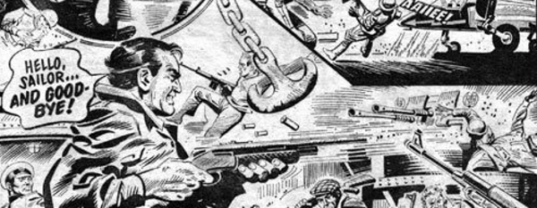

Cockney rebel Bill Savage defends Britain from invading Russians Volgans, using the same no-nonsense approach as Michael Caine's character in Get Carter.
Popular enough to spawn a prequel series (Disaster 1990), the character of Bill Savage was viewed as a has-been by the time the mid-90s rolled around, and was depicted as a comedy cameo in Armoured Gideon series The Collector. A grittier, narratively immediate sequel series cropped up in 2004 with the tighter title of Savage, and ran successfully for fifteen years.
Art by Carlos Pino
| Story Title | Parts | Pages | w indicates a wraparound coverCovers | Year(s) | Issues | Writer | Artist | Colourist | Letterer |
|---|---|---|---|---|---|---|---|---|---|
| [The Resistance] | 5 | 23 | 0 | 1977 | Reprints: X31-5 | Pat Mills: 1 Gerry Finley‑Day: 2‑5 various | Jesus Blasco: 1‑3 Pat Wright: 4 Sarompas: 5 various | [b&w] | Bill Nuttall: 1 Jack Potter: 2‑3 Tom Frame: 4 John Aldrich: 5 various |
| [Wembley] | 1 | 5 | 0 | 1977 | Reprints: 2KA'83 X8 6 | Gerry Finley-Day | Ian Kennedy | [b&w] | Bill Nuttall |
| [Train Story] | 1 | 5 | 0 | 1977 | 7 | Pat Mills | Sarompas | [b&w] | John Aldrich |
| [Concorde] | 1 | 4 | 0 | 1977 | Reprints: SFS7 X8 8 | Gerry Finley-Day | Mike Dorey | [b&w] | Jack Potter |
| [Ships] | 1 | 5 | 0 | 1977 | Reprints: X89 | Gerry Finley-Day | Carlos Pino | [b&w] | Jack Potter |
| [Dartmoor] | 2 | 7 | 0 | 1977 | Reprints: X510-11 | Gerry Finley-Day | Eric Bradbury | [b&w] | John Aldrich |
| Death Line | 1 | 4 | 0 | 1977 | Reprints: SFS5 X5 12 | Gerry Finley-Day | Carlos Pino | [b&w] | Jack Potter |
| [The Doomsdale Scenario] | 3 | 12.5 | 0 | 1977 | Reprints: X313-15 | Gerry Finley-Day | Mike Dorey: 1, 3 Carlos Pino: 2 various | [b&w] | Jack Potter: 1‑2 John Aldrich: 3 various |
| [Bounty Hunter] | 1 | 4.5 | 0 | 1977 | Reprints: X516 | Gerry Finley-Day | Carlos Pino | [b&w] | Peter Knight |
| [Slaves] | 1 | 4 | 0 | 1977 | Reprints: X517 | Gerry Finley-Day | Mike Dorey | [b&w] | John Aldrich |
| [Breakout] | 1 | 5 | 0 | 1977 | Reprints: X818 | Gerry Finley-Day | Carlos Pino | [b&w] | Tom Frame |
| [The Road to Hell] | 1 | 4.5 | 0 | 1977 | Reprints: X319 | Gerry Finley-Day | Mike Dorey | [b&w] | Tom Frame |
| [Hell's Angels] | 1 | 4.5 | 0 | 1977 | Reprints: X820 | Gerry Finley-Day | Carlos Pino | [b&w] | Tom Frame |
| [Sandringham] | 1 | 5 | 0 | 1977 | Reprints: X821 | Gerry Finley-Day | Mike Dorey | [b&w] | Peter Knight |
| [Cheddar Gorge] | 1 | 3 | 0 | 1977 | 22 | Nick Allen | Carlos Pino | [b&w] | Jack Potter |
| [Tyne Tunnel] | 1 | 5 | 0 | 1977 | Reprints: X823 | Gerry Finley-Day | Mike Dorey | [b&w] | John Aldrich |
| [Hadrian's Wall] | 1 | 5 | 0 | 1977 | 24 | Gerry Finley-Day | Carlos Pino | [b&w] | Jack Potter |
| [Bathtub] | 1 | 5 | 0 | 1977 | Reprints: SFS625 | Gerry Finley-Day | Mike Dorey | [b&w] | John Aldrich |
| [Bluebird] | 1 | 4 | 0 | 1977 | 26 | Gerry Finley-Day | Carlos Pino | [b&w] | John Aldrich |
| [Dirty Jocks] | 5 | 21 | 0 | 1977 | 27-31 | Gerry Finley-Day | Mike Dorey: 1 Carlos Pino: 2, 4 Luis Collado: 3, 4 various | [b&w] | Tony Jacob: 1 John Aldrich: 2‑3 Peter Knight: 4‑5 various |
| Tank Trap | 1 | 8 | 0 | 1977 | 2KA'78 | unknown | unknown | [b&w] | unknown |
| [Volgess] | 2 | 9 | 0 | 1977 | Reprints: X332-33 | Gerry Finley-Day | Mike Dorey | [b&w] | Bill Nuttall |
| [Collaborator] | 1 | 4 | 0 | 1977 | 34 | Nick Flynn | Luis Collado | [b&w] | Peter Knight |
| [New Recruits] | 1 | 5 | 0 | 1977 | 35 | Gerry Finley-Day | Carlos Pino | [b&w] | Peter Knight |
| [Jump Jet] | 1 | 5 | 0 | 1977 | Reprints: 2KA'8436 | Chris Lowder | Ian Kennedy | [b&w] | Tom Frame |
| [The Prince] | 8 | 38 | 0 | 1977 | Reprints: X3 (partial)37-44 | Gerry Finley-Day | Carlos Pino: 1, 3, 5, 7 Mike Dorey: 2, 4, 6, 8 various | [b&w] | Tom Frame: 1 Tony Jacob: 2 Bill Nuttall: 4, 7 Peter Knight: 6 unknown: 3, 5, 8 various |
| [The Return of Rosa] | 1 | 5 | 0 | 1977 | Reprints: X345 | Gerry Finley-Day | Carlos Pino | [b&w] | Peter Knight |
| Deadlier Than the Male | 1 | 5 | 0 | 1978 | 46 | Gerry Finley-Day | Mike Dorey | [b&w] | Peter Knight |
| [Escape From Liverpool] | 5 | 24.5 | 0 | 1978 | Reprints: X347-51 | Gerry Finley-Day | Carlos Pino: 1, 3 Mike Dorey: 2, 4‑5 various | [b&w] | Peter Knight: 1‑4 Tom Frame: 5 various |
| [The Bristol Raid] | 1 | 6 | 0 | 1978 | 2KA'79 | unknown | unknown | [greyscale] | unknown |
| [Skyship] | 1 | 5 | 0 | 1978 | DDA'79 | unknown | unknown | [greyscale] | unknown |
One page is monochrome.[A Born Villain] | 1 | 8 | 0 | 1979 | 2KA'80 | unknown | unknown | [greyscale] | unknown |
From Armoured Gideon Features a crossover event with multiple (at the time) out of print characters.[The Collector] | 11 | 67 | 895: Simon Jacob 897: Simon Jacob 2 | 1994 | 889-899 | John Tomlinson | Simon Jacob: 1‑8,10‑11 Mike White: 9 (final panel 8) various | <-- | 1‑8,10‑11: Annie Parkhouse 9: Peter Knight various |
No supertitle.Invasion! 3000AD | 1 | 2 | 0 | 1997 | 1034-S | David Bishop Steve MacManusvarious | Henry Flint | <-- | Ellie de Ville |
| >> Features << | |||||||||
| Red Alert Survival Wallet | 1 | 1 | 0 | 1977 | 3 | editorial | Jesus Blasco, editorial | [b&w] | n/a |
| Red Alert!: 2000AD Futuregraph | 1 | 1 | 0 | 1977 | 5 | editorial | Adrian Beeton | [b&w] | n/a |
From Tharg's Datachips#9: Bill Savage | 1 | 0.5 | 0 | 1996 | 992 | n/a | Eric Bradbury | <-- | n/a |
From Hall of HeroesBill Savage | 1 | 2 | 0 | 2003 | M204 | David Bishop | Reprint. Mike Dorey | Adrian Salmon | n/a |
| >> Floating Covers << | |||||||||
| Volgs Out | ~ | ~ | 1 | 2004 | X3 | n/a | Cam Kennedy | <-- | n/a |
| year | episodes | pages |
| 1977 | 46 | 210 |
| 1978 | 8 | 40.5 |
| 1979 | 1 | 8 |
| 1980 | 0 | 0 |
| 1981 | 0 | 0 |
| 1982 | 0 | 0 |
| 1983 | 0 | 0 |
| 1984 | 0 | 0 |
| 1985 | 0 | 0 |
| 1986 | 0 | 0 |
| 1987 | 0 | 0 |
| 1988 | 0 | 0 |
| 1989 | 0 | 0 |
| 1990 | 0 | 0 |
| 1991 | 0 | 0 |
| 1992 | 0 | 0 |
| 1993 | 0 | 0 |
| 1994 | 11 | 67 |
| 1995 | 0 | 0 |
| 1996 | 0 | 0 |
| 1997 | 1 | 2 |
| 1998 | 0 | 0 |
| 1999 | 0 | 0 |
Comic strip data (excludes other content):